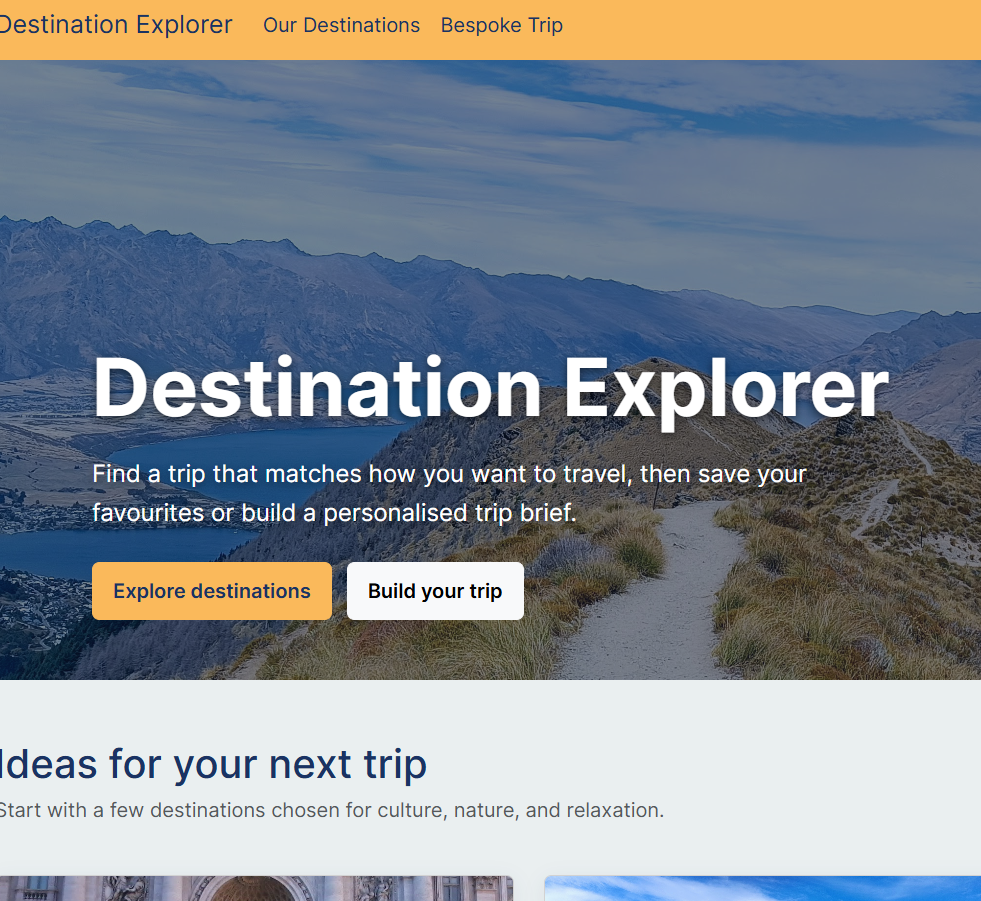

No image avaiable
assets/img/destination-explorer.png
Featured frontend project
Destination Explorer
A travel discovery application inspired by my interest in travel and international experiences. Users can explore destinations, search for cities, create personalised shortlists and plan future trips.
- Destination filtering and reusable React components
- External API integration and persistent shortlists
- Interactive 3D globe and responsive interface
- Accessible contact forms integrated with Formspree
- JavaScript
- React
- React Router
- Bootstrap
- REST APIs